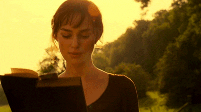
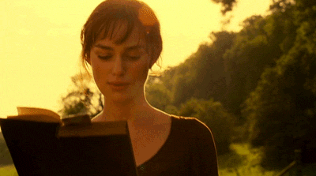

Esta foi a primeira vez em que o diretor Joe Wright e a atriz Keira Knightley trabalharam juntos.
Rosamund Pike foi a primeira escolha de Wright para interpretar Jane no projeto.
A princípio, Wright não estava muito afeiçoado à ideia de Knightley interpretando Elizabeth, acreditando que ela não era muito atraente. Porém, ele mudou de ideia quando a conheceu.
Wright recebeu inúmeros elogios da crítica, ainda mais considerando que o título marcou sua estreia diretorial.
Knightley, por sua vez, foi ovacionada pelos especialistas e ganhou inúmeros prêmios, incluindo uma indicação ao Oscar de Melhor Atriz.
A obra fez um estrondo de bilheteria e arrecadou quase US$122 milhões mundialmente.
Matthew Macfadyen, intérprete do Sr. Darcy, tem uma visão muito fraca. Durante as filmagens pela manhã, Wright ficava atrás das câmeras balançando uma bandeira vermelha para que o ator pudesse saber em que direção andar.
A atriz Emma Thompson reescreveu o roteiro de Orgulho e Preconceito, apesar de não estar creditada. No final dos créditos há um agradecimento especial à ela.
Esta é a quarta adaptação do livro de Jane Austen para o cinema. As demais foram Orgulho e Preconceito (1940), Pride and Prejudice (2003) e Noiva e Preconceito (2004).
Logo no início a personagem Elizabeth aparece lendo um livro chamado "First Impressions". Trata-se do título original dado por Jane Austen a "Orgulho e Preconceito", que posteriormente mudou de nome.
As versões americana e inglesa de Orgulho e Preconceito possuem finais diferentes.
A cena final, em que os recém-casados Elizabeth e Sr. Darcy estão nos arredores de Pemberly mostrando afeição um pelo outro, foi cortada da versão britânica.

 
